Most healthcare IT education means reading specs. WintEHR is the other way around:
place an order and watch the MedicationRequest land in a real HAPI FHIR server,
fire a CDS Hook and see the card interrupt the workflow — then open the code and see exactly how.
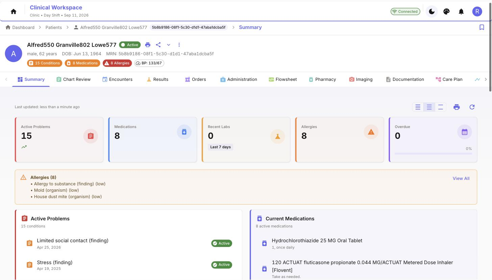
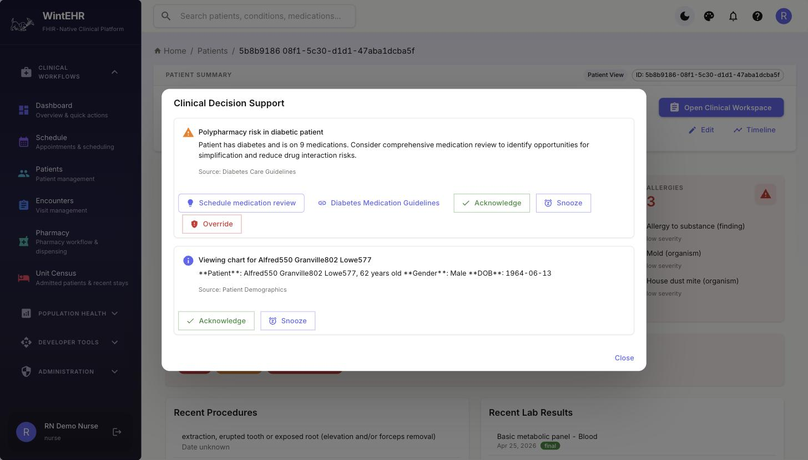
Every workflow is real, every resource is standards-conformant, and every patient is synthetic — so students can break things freely and learn how health systems actually move data.
Run a live EHR for your course without a vendor contract or a compliance office.
See what the spec means. Chart a vital, then pull it back as a LOINC-coded Observation.
A realistic integration target: HAPI FHIR, CDS Hooks 2.0, SMART launch, a DICOM VNA.
These are unedited captures from a running WintEHR instance with Synthea-generated patients. What the clinician does in the UI is what lands in the FHIR server.
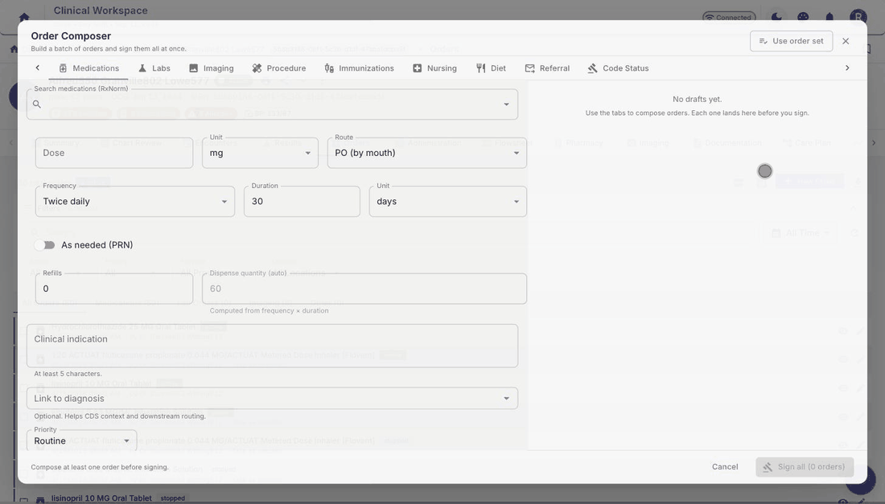
Search the RxNorm-coded catalog, compose the sig, and sign. CDS Hooks fire on order-select while you compose; safety gates check allergies before signing.
Seconds later this MedicationRequest is queryable in HAPI FHIR:
{
"resourceType": "MedicationRequest",
"status": "active", "intent": "order",
"medicationCodeableConcept": { "coding": [{
"system": "…umls/rxnorm", "code": "206905",
"display": "Ibuprofen 400 MG Oral Tablet" }]},
"reasonCode": [{ "text": "Osteoarthritis knee pain" }],
"dosageInstruction": [{ "text": "400 mg · PO · BID" }]
}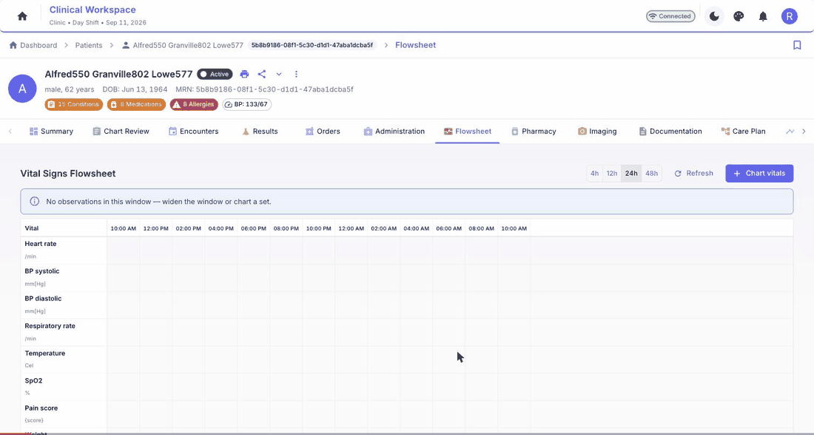
The nursing flowsheet writes each charted value as a LOINC-coded FHIR Observation, timestamped now — no hidden tables, no shortcuts. Query it back through the API a second later.
The Flowsheet tab is also WintEHR's pilot pluggable module: the template to copy when you build your own clinical domain.
This is the actual wire format a CDS Hooks 2.0 service returns to WintEHR. Pick a scenario — or edit the JSON — and see how it renders inside the clinician's workflow.
In a live deployment, WintEHR invokes registered services on patient-view, order-select and order-sign hooks, prefetches the FHIR data each service asks for, and POSTs your accept/override decisions back as CDS Hooks feedback. You can point it at your own service by URL — no code changes.
Twelve clinical workspace tabs plus pharmacy, imaging, scheduling, analytics — each one an honest implementation of the standard it teaches.
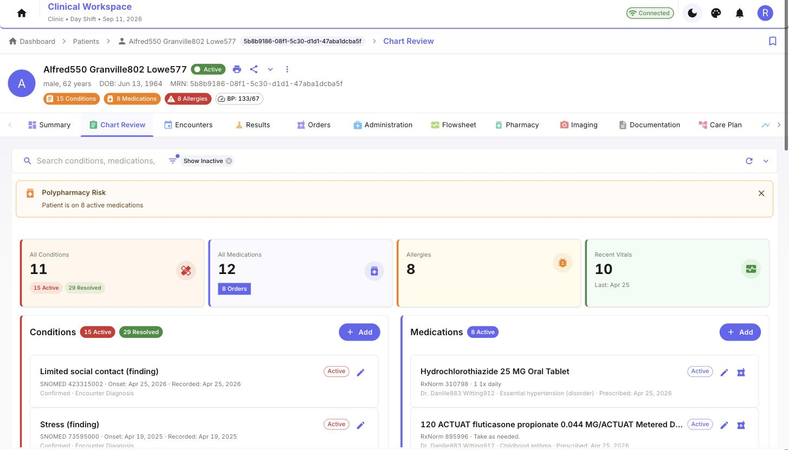
Problems, meds, and allergies with their real codes on the card.
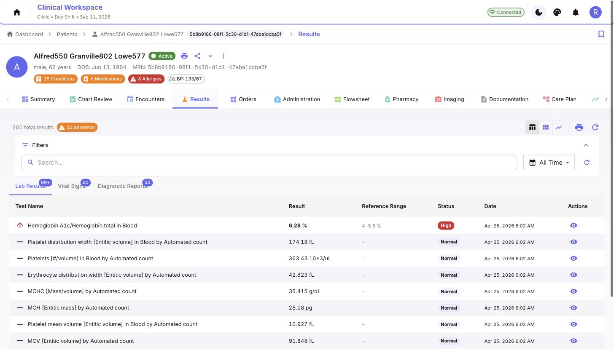
Lab trending with reference ranges and abnormal flags.
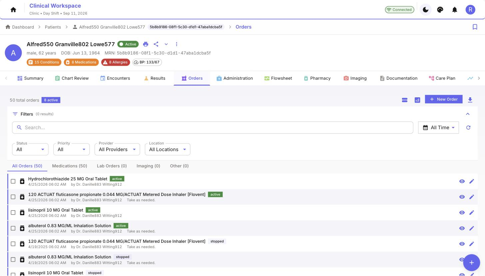
Order sets, status gates, allergy checks at signing.
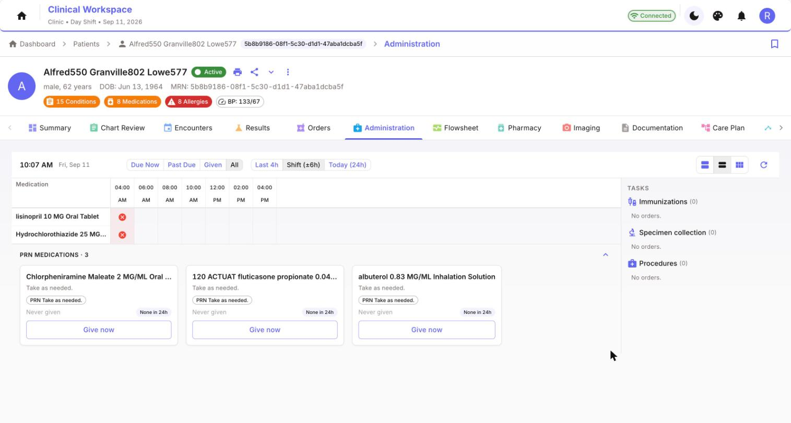
Scheduled-dose grid, PRN gives, administration signing.
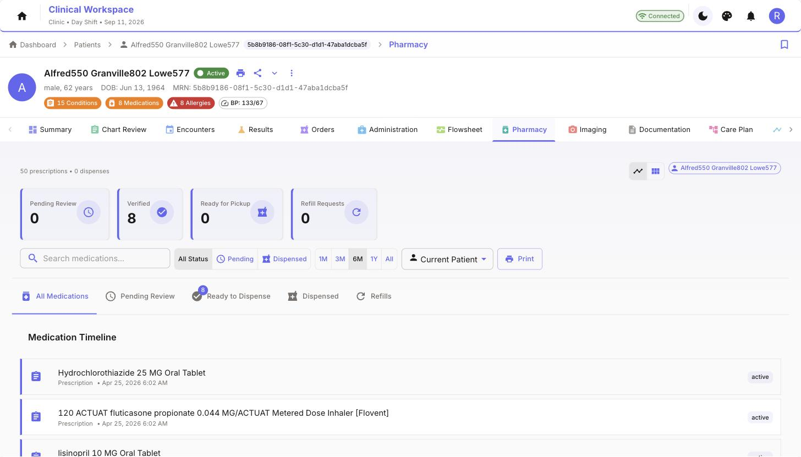
Verify, dispense, refill — the other half of every order.
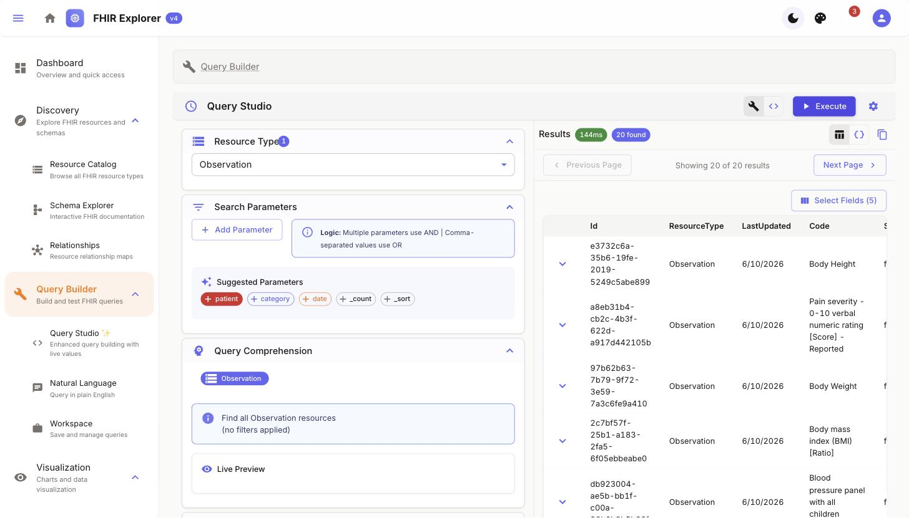
Build queries visually, run them live, inspect raw resources.
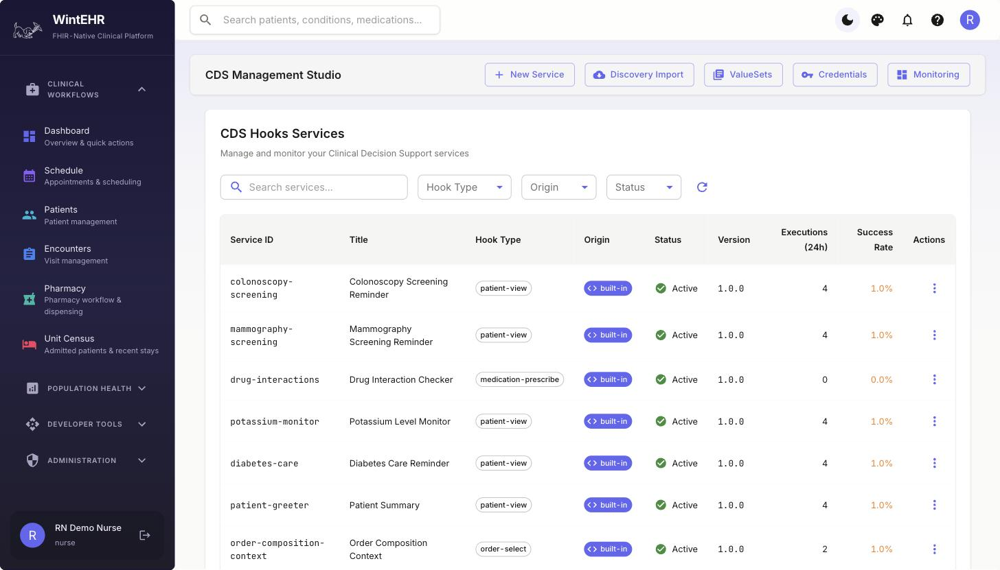
Author rules visually or in CQL; deploy as first-class services.
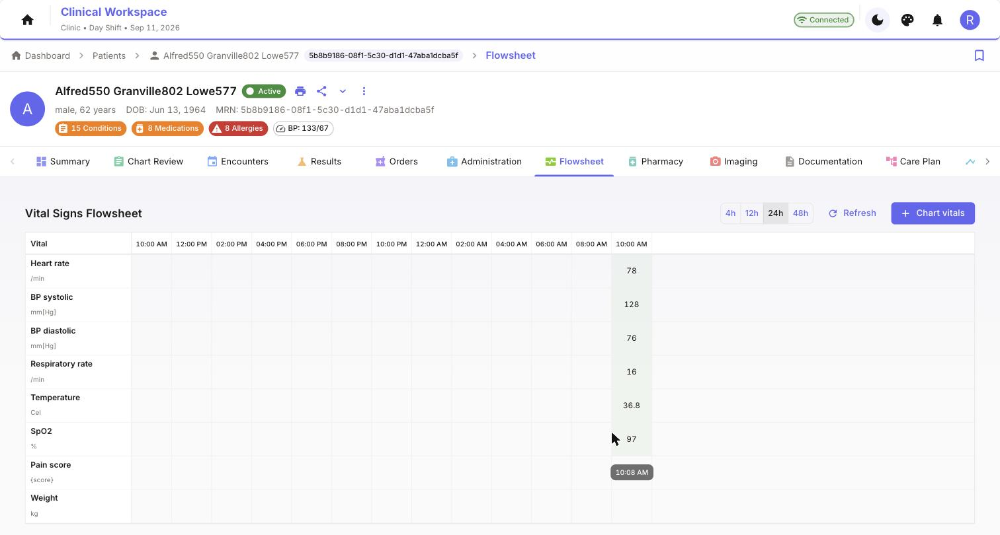
Nursing vitals grid — and the pilot pluggable module.
Cards that interrupt, suggest, and act — with feedback loops.
HAPI FHIR is the same server running inside real health systems, so the patterns you learn transfer. All clinical data lives in FHIR — there are no custom clinical tables to unlearn.
Full component reference, request flows and data pipelines in docs/SYSTEM_ARCHITECTURE.md
Four ways in, from lightest to deepest. Each one is a real assignment a student — or a product team — can finish.
Point WintEHR at any CDS Hooks 2.0 endpoint by URL, at runtime. Your service receives real hook invocations with prefetched FHIR data, and its cards render inside the clinician's workflow.
WintEHR provides the OAuth2/PKCE launch sequence and the FHIR API; your app lives entirely in its own repo. The bundled SMART demo app shows the whole handshake.
CDS Studio composes rules from the UI and deploys them as first-class services. A student-facing CQL primer takes first-timers from zero to a working quality measure.
A new domain — oncology, referrals, dialysis — with its own workspace tab and backend, scaffolded in one command: python3 scripts/new-module.py referrals "Referrals". Modules are switchable per deployment and can live in their own repo, composed in at build time. Contract in docs/MODULES.md.
You'll need Git, Docker with Compose, 8 GB of RAM and 20 GB of disk. The first deploy builds images, initializes HAPI, and generates a fresh synthetic population — 15 to 25 minutes; coffee-length, not committee-length.
Patient data regenerates on deploy — break things freely. Detailed dev, prod, and cloud guides in docs/DEPLOYMENT.md.
| Clinical portal | localhost:3000 |
| FHIR R4 API | localhost:8888/fhir — raw HAPI |
| Backend API | localhost:8000/docs — Swagger |
password